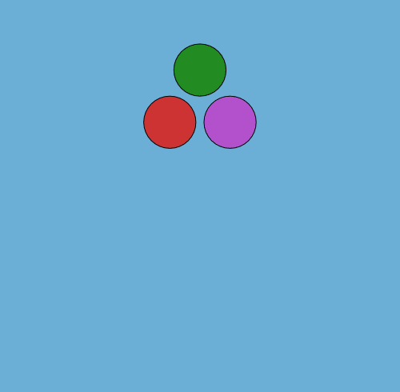
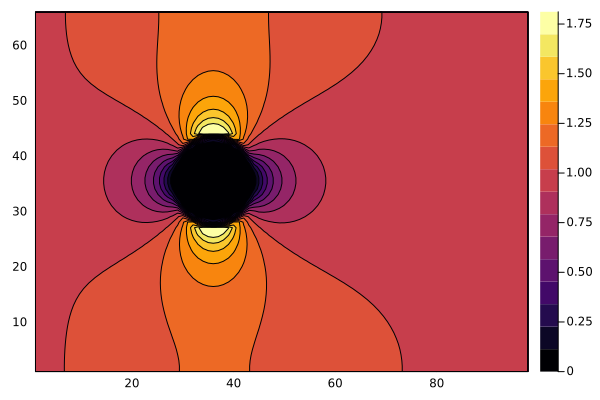
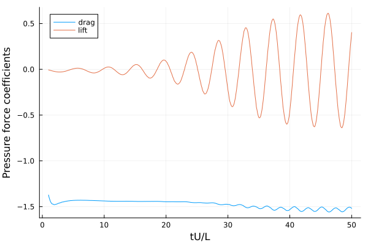
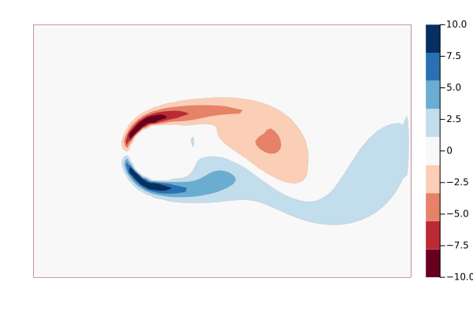

WaterLily
Introduction and Quickstart
WaterLily — ModuleWaterLily.jl



Overview
WaterLily.jl is a simple and fast fluid simulator written in pure Julia. This project is supported by awesome libraries developed within the Julia scientific community, and it aims to accelerate and enhance fluid simulations. Watch the JuliaCon2024 talk here:
If you have used WaterLily for research, please cite us! The 2024 paper describes the main features of the solver and provides benchmarking, validation, and profiling results.
@misc{WeymouthFont2024,
title = {WaterLily.jl: A differentiable and backend-agnostic Julia solver to simulate incompressible viscous flow and dynamic bodies},
author = {Gabriel D. Weymouth and Bernat Font},
url = {https://arxiv.org/abs/2407.16032},
eprint = {2407.16032},
archivePrefix = {arXiv},
year = {2024},
primaryClass = {physics.flu-dyn}
}Method/capabilities
WaterLily solves the unsteady incompressible 2D or 3D Navier-Stokes equations on a Cartesian grid. The pressure Poisson equation is solved with a geometric multigrid method. Solid boundaries are modelled using the Boundary Data Immersion Method. The solver can run on serial CPU, multi-threaded CPU, or GPU backends.
Example: Flow over a circle
WaterLily lets the user can set the domain size and boundary conditions, the fluid viscosity (which determines the Reynolds number), and immerse solid obstacles. A large selection of examples, notebooks, and tutorials are found in the WaterLily-Examples repository. Here, we will illustrate the basics by simulating and plotting the flow over a circle.
We define the size of the simulation domain as n by m cells. The circle has radius m/8 and is centered at (m/2,m/2). The flow boundary conditions are (U,0), where we set U=1, and the Reynolds number is Re=U*radius/ν where ν (Greek "nu" U+03BD, not Latin lowercase "v") is the kinematic viscosity of the fluid.
using WaterLily
function circle(n,m;Re=100,U=1)
# signed distance function to circle
radius, center = m/8, m/2-1
sdf(x,t) = √sum(abs2, x .- center) - radius
Simulation((n,m), # domain size
(U,0), # domain velocity (& velocity scale)
2radius; # length scale
ν=U*2radius/Re, # fluid viscosity
body=AutoBody(sdf)) # geometry
endThe circle geometry is defined using a signed distance function. The AutoBody function uses automatic differentiation to infer the other geometric parameters of the body automatically. Replace the circle's distance function with any other, and now you have the flow around something else... such as a donut or the Julia logo. For more complex geometries, ParametricBodies.jl defines a body using any parametric curve, such as a spline. See that repo (and the video above) for examples.
The code block above return a Simulation with the parameters we've defined. Now we can initialize a simulation (first line) and step it forward in time (second line)
circ = circle(3*2^5,2^6)
sim_step!(circ)Note we've set n,m to be multiples of powers of 2, which is important when using the (very fast) geometric multi-grid solver.
We can now access and plot whatever variables we like. For example, we can plot the x-component of the velocity field using
using Plots
u = circ.flow.u[:,:,1] # first component is x
contourf(u') # transpose the array for the plot
As you can see, the velocity within the circle is zero, the velocity far from the circle is one, and there are accelerated and decelerated regions around the circle. The sim_step! has only taken a single time step, and this initial flow around our circle looks similar to the potential flow because the viscous boundary layer has not separated yet.
A set of flow metric functions have been implemented, and we can use them to measure the simulation. The following code block defines a function to step the simulation to time t and then use the pressure_force metric to measure the force on the immersed body. The function is applied over a time range, and the forces are plotted.
function get_forces!(sim,t)
sim_step!(sim,t,remeasure=false)
force = WaterLily.pressure_force(sim)
force./(0.5sim.L*sim.U^2) # scale the forces!
end
# Simulate through the time range and get forces
time = 1:0.1:50 # time scale is sim.L/sim.U
forces = [get_forces!(circ,t) for t in time];
#Plot it
plot(time,[first.(forces), last.(forces)],
labels=permutedims(["drag","lift"]),
xlabel="tU/L",
ylabel="Pressure force coefficients")
We can also plot the vorticity field instead of the u-velocity to see a snap-shot of the wake.
# Use curl(velocity) to compute vorticity `inside` the domain
ω = zeros(size(u));
@inside ω[I] = WaterLily.curl(3,I,circ.flow.u)*circ.L/circ.U
# Plot it
clims = (-6,6)
contourf(clamp.(ω,clims...)'; clims,
color=palette(:RdBu,9),linewidth=0,levels=8,
aspect_ratio=:equal,border=:none)
As you can see, WaterLily correctly predicts that the flow is unsteady, with an alternating vortex street wake, leading to an oscillating side force and drag force.
Multi-threading and GPU backends
WaterLily uses KernelAbstractions.jl to multi-thread on CPU and run on GPU backends. The implementation method and speed-up are documented in the 2024 paper, with costs as low as 1.44 nano-seconds measured per degree of freedom and time step!
Note that multi-threading requires starting Julia with the --threads argument, see the multi-threading section of the manual. If you are running Julia with multiple threads, KernelAbstractions will detect this and multi-thread the loops automatically.
Running on a GPU requires initializing the Simulation memory on the GPU, and care needs to be taken to move the data back to the CPU for visualization. As an example, let's compare a 3D GPU simulation of a sphere to the 2D multi-threaded CPU circle defined above
using CUDA,WaterLily
function sphere(n,m;Re=100,U=1,T=Float64,mem=Array)
radius, center = m/8, m/2-1
body = AutoBody((x,t)->√sum(abs2, x .- center) - radius)
Simulation((n,m,m),(U,0,0), # 3D array size and BCs
2radius;ν=U*2radius/Re,body, # no change
T, # Floating point type
mem) # memory type
end
@assert CUDA.functional() # is your CUDA GPU working??
GPUsim = sphere(3*2^5,2^6;T=Float32,mem=CuArray); # 3D GPU sim!
println(length(GPUsim.flow.u)) # 1.3M degrees-of freedom!
sim_step!(GPUsim) # compile GPU code & run one step
@time sim_step!(GPUsim,50,remeasure=false) # 40s!!
CPUsim = circle(3*2^5,2^6); # 2D CPU sim
println(length(CPUsim.flow.u)) # 0.013M degrees-of freedom!
sim_step!(CPUsim) # compile GPU code & run one step
println(Threads.nthreads()) # I'm using 8 threads
@time sim_step!(CPUsim,50,remeasure=false) # 28s!!As you can see, the 3D sphere set-up is almost identical to the 2D circle, but using 3D arrays means there are almost 1.3M degrees-of-freedom, 100x bigger than in 2D. Never the less, the simulation is quite fast on the GPU, only around 40% slower than the much smaller 2D simulation on a CPU with 8 threads. See the 2024 paper and the examples repo for many more non-trivial examples including running on AMD GPUs.
Finally, KernelAbstractions does incur some CPU allocations for every loop, but other than this sim_step! is completely non-allocating. This is one reason why the speed-up improves as the size of the simulation increases.
Contributing and issues
We always appreciate new contributions, so please submit a pull request with your changes and help us make WaterLily even better! Note that contributions need to be submitted together with benchmark results - WaterLily should always be fast! 😃 For this, we have a fully automated benchmarking suite that conducts performance tests. In short, to compare your changes with the latest WaterLily, clone the that repo and run the benchmarks with
git clone https://github.com/WaterLily-jl/WaterLily-Benchmarks && cd WaterLily-Benchmarks
sh benchmark.sh -wd "<your/waterlily/path>" -w "<your_waterlily_branch> master"
julia --project compare.jlThis will run benchmarks for CPU and GPU backends. If you do not have a GPU, simply pass -b "Array" when runnning benchmark.sh. More information on the benchmark suite is available in that README.
Of course, ideas, suggestions, and questions are welcome too! Please raise an issue to address any of these.
Development goals
- Immerse obstacles defined by 3D meshes (Meshing.jl)
- Multi-CPU/GPU simulations (https://github.com/WaterLily-jl/WaterLily.jl/pull/141)
- Free-surface physics with (Volume-of-Fluid) or other methods.
Types Methods and Functions
WaterLilyWaterLily.AbstractBodyWaterLily.AbstractPoissonWaterLily.AutoBodyWaterLily.BodiesWaterLily.FlowWaterLily.MultiLevelPoissonWaterLily.NoBodyWaterLily.SimulationWaterLily.BC!WaterLily.BCTupleWaterLily.CIjWaterLily.Jacobi!WaterLily.L₂WaterLily.accelerate!WaterLily.apply!WaterLily.check_nthreadsWaterLily.curlWaterLily.curvatureWaterLily.exitBC!WaterLily.insideWaterLily.inside_uWaterLily.interpWaterLily.keWaterLily.locWaterLily.loggerWaterLily.measureWaterLily.measure!WaterLily.measure!WaterLily.measure_sdf!WaterLily.mom_step!WaterLily.mult!WaterLily.ndsWaterLily.pcg!WaterLily.perBC!WaterLily.pressure_forceWaterLily.pressure_momentWaterLily.reduce_sdf_mapWaterLily.residual!WaterLily.sdfWaterLily.sdfWaterLily.sdf_map_dWaterLily.sim_step!WaterLily.sim_timeWaterLily.sliceWaterLily.solver!WaterLily.timeWaterLily.total_forceWaterLily.viscous_forceWaterLily.δWaterLily.λ₂WaterLily.ωWaterLily.ω_magWaterLily.ω_θWaterLily.∂WaterLily.∇²uWaterLily.@insideWaterLily.@loop
WaterLily.AbstractBody — TypeAbstractBodyImmersed body Abstract Type. Any AbstractBody subtype must implement
d = sdf(body::AbstractBody, x, t=0)and
d,n,V = measure(body::AbstractBody, x, t=0, fastd²=Inf)where d is the signed distance from x to the body at time t, and n & V are the normal and velocity vectors implied at x. A fast-approximate method can return ≈d,zero(x),zero(x) if d^2>fastd².
WaterLily.AbstractPoisson — TypePoisson{N,M}Composite type for conservative variable coefficient Poisson equations:
∮ds β ∂x/∂n = σThe resulting linear system is
Ax = [L+D+L']x = zwhere A is symmetric, block-tridiagonal and extremely sparse. Moreover, D[I]=-∑ᵢ(L[I,i]+L'[I,i]). This means matrix storage, multiplication, ect can be easily implemented and optimized without external libraries.
To help iteratively solve the system above, the Poisson structure holds helper arrays for inv(D), the error ϵ, and residual r=z-Ax. An iterative solution method then estimates the error ϵ=̃A⁻¹r and increments x+=ϵ, r-=Aϵ.
WaterLily.AutoBody — TypeAutoBody(sdf,map=(x,t)->x; compose=true) <: AbstractBodysdf(x::AbstractVector,t::Real)::Real: signed distance functionmap(x::AbstractVector,t::Real)::AbstractVector: coordinate mapping functioncompose::Bool=true: Flag for composingsdf=sdf∘map
Implicitly define a geometry by its sdf and optional coordinate map. Note: the map is composed automatically if compose=true, i.e. sdf(x,t) = sdf(map(x,t),t). Both parameters remain independent otherwise. It can be particularly heplful to set compose=false when adding mulitple bodies together to create a more complex one.
WaterLily.Bodies — TypeBodies(bodies, ops::AbstractVector)bodies::Vector{AutoBody}: Vector ofAutoBodyops::Vector{Function}: Vector of operators for the superposition of multipleAutoBodys
Superposes multiple body::AutoBody objects together according to the operators ops. While this can be manually performed by the operators implemented for AutoBody, adding too many bodies can yield a recursion problem of the sdf and map functions not fitting in the stack. This type implements the superposition of bodies by iteration instead of recursion, and the reduction of the sdf and map functions is done on the mesure function, and not before. The operators vector ops specifies the operation to call between two consecutive AutoBodys in the bodies vector. Note that + (or the alias ∪) is the only operation supported between Bodies.
WaterLily.Flow — TypeFlow{D::Int, T::Float, Sf<:AbstractArray{T,D}, Vf<:AbstractArray{T,D+1}, Tf<:AbstractArray{T,D+2}}Composite type for a multidimensional immersed boundary flow simulation.
Flow solves the unsteady incompressible Navier-Stokes equations on a Cartesian grid. Solid boundaries are modelled using the Boundary Data Immersion Method. The primary variables are the scalar pressure p (an array of dimension D) and the velocity vector field u (an array of dimension D+1).
WaterLily.MultiLevelPoisson — TypeMultiLevelPoisson{N,M}Composite type used to solve the pressure Poisson equation with a geometric multigrid method. The only variable is levels, a vector of nested Poisson systems.
WaterLily.NoBody — TypeNoBodyUse for a simulation without a body.
WaterLily.Simulation — TypeSimulation(dims::NTuple, u_BC::Union{NTuple,Function}, L::Number;
U=norm2(u_BC), Δt=0.25, ν=0., ϵ=1, perdir=()
uλ::nothing, g=nothing, exitBC=false,
body::AbstractBody=NoBody(),
T=Float32, mem=Array)Constructor for a WaterLily.jl simulation:
dims: Simulation domain dimensions.u_BC: Simulation domain velocity boundary conditions, either a tupleu_BC[i]=uᵢ, i=eachindex(dims), or a time-varying functionf(i,t)L: Simulation length scale.U: Simulation velocity scale.Δt: Initial time step.ν: Scaled viscosity (Re=UL/ν).g: Domain acceleration,g(i,t)=duᵢ/dtϵ: BDIM kernel width.perdir: Domain periodic boundary condition in the(i,)direction.exitBC: Convective exit boundary condition in thei=1direction.uλ: Function to generate the initial velocity field.body: Immersed geometry.T: Array element type.mem: memory location.Array,CuArray,ROCmto run on CPU, NVIDIA, or AMD devices, respectively.
See files in examples folder for examples.
WaterLily.BC! — FunctionBC!(a,A)Apply boundary conditions to the ghost cells of a vector field. A Dirichlet condition a[I,i]=A[i] is applied to the vector component normal to the domain boundary. For example aₓ(x)=Aₓ ∀ x ∈ minmax(X). A zero Neumann condition is applied to the tangential components.
WaterLily.BCTuple — FunctionBCTuple(U,dt,N)Return BC tuple U(i∈1:N, t=sum(dt)).
WaterLily.CIj — MethodCIj(j,I,jj)Replace jᵗʰ component of CartesianIndex with k
WaterLily.Jacobi! — MethodJacobi!(p::Poisson; it=1)Jacobi smoother run it times. Note: This runs for general backends, but is very slow to converge.
WaterLily.L₂ — MethodL₂(a)L₂ norm of array a excluding ghosts.
WaterLily.accelerate! — Functionaccelerate!(r,dt,g)Add a uniform acceleration gᵢ+dUᵢ/dt at time t=sum(dt) to field r.
WaterLily.apply! — Methodapply!(f, c)Apply a vector function f(i,x) to the faces of a uniform staggered array c or a function f(x) to the center of a uniform array c.
WaterLily.check_nthreads — Methodcheck_nthreads(::Val{1})Check the number of threads available for the Julia session that loads WaterLily. A warning is shown when running in serial (JULIANUMTHREADS=1).
WaterLily.curl — Methodcurl(i,I,u)Compute component i of $𝛁×𝐮$ at the edge of cell I. For example curl(3,CartesianIndex(2,2,2),u) will compute ω₃(x=1.5,y=1.5,z=2) as this edge produces the highest accuracy for this mix of cross derivatives on a staggered grid.
WaterLily.curvature — Methodcurvature(A::AbstractMatrix)Return H,K the mean and Gaussian curvature from A=hessian(sdf). K=tr(minor(A)) in 3D and K=0 in 2D.
WaterLily.exitBC! — MethodexitBC!(u,u⁰,U,Δt)Apply a 1D convection scheme to fill the ghost cell on the exit of the domain.
WaterLily.inside — Methodinside(a)Return CartesianIndices range excluding a single layer of cells on all boundaries.
WaterLily.inside_u — Methodinside_u(dims,j)Return CartesianIndices range excluding the ghost-cells on the boundaries of a vector array on face j with size dims.
WaterLily.interp — Methodinterp(x::SVector, arr::AbstractArray)
Linear interpolation from array `arr` at index-coordinate `x`.
Note: This routine works for any number of dimensions.WaterLily.ke — Methodke(I::CartesianIndex,u,U=0)Compute $½∥𝐮-𝐔∥²$ at center of cell I where U can be used to subtract a background flow (by default, U=0).
WaterLily.loc — Methodloc(i,I) = loc(Ii)Location in space of the cell at CartesianIndex I at face i. Using i=0 returns the cell center s.t. loc = I.
WaterLily.logger — Functionlogger(fname="WaterLily")Set up a logger to write the pressure solver data to a logging file named WaterLily.log.
WaterLily.measure! — Functionmeasure!(sim::Simulation,t=timeNext(sim))Measure a dynamic body to update the flow and pois coefficients.
WaterLily.measure! — Methodmeasure!(flow::Flow, body::AbstractBody; t=0, ϵ=1)Queries the body geometry to fill the arrays:
flow.μ₀, Zeroth kernel momentflow.μ₁, First kernel moment scaled by the body normalflow.V, Body velocity
at time t using an immersion kernel of size ϵ.
See Maertens & Weymouth, doi:10.1016/j.cma.2014.09.007.
WaterLily.measure — Methodd,n,V = measure(body::AutoBody||Bodies,x,t;fastd²=Inf)Determine the implicit geometric properties from the sdf and map. The gradient of d=sdf(map(x,t)) is used to improve d for pseudo-sdfs. The velocity is determined solely from the optional map function. Skips the n,V calculation when d²>fastd².
WaterLily.measure_sdf! — Functionmeasure_sdf!(a::AbstractArray, body::AbstractBody, t=0)Uses sdf(body,x,t) to fill a.
WaterLily.mom_step! — Methodmom_step!(a::Flow,b::AbstractPoisson)Integrate the Flow one time step using the Boundary Data Immersion Method and the AbstractPoisson pressure solver to project the velocity onto an incompressible flow.
WaterLily.mult! — Methodmult!(p::Poisson,x)Efficient function for Poisson matrix-vector multiplication. Fills p.z = p.A x with 0 in the ghost cells.
WaterLily.nds — Methodnds(body,x,t)BDIM-masked surface normal.
WaterLily.pcg! — Methodpcg!(p::Poisson; it=6)Conjugate-Gradient smoother with Jacobi preditioning. Runs at most it iterations, but will exit early if the Gram-Schmidt update parameter |α| < 1% or |r D⁻¹ r| < 1e-8. Note: This runs for general backends and is the default smoother.
WaterLily.perBC! — MethodperBC!(a,perdir)Apply periodic conditions to the ghost cells of a scalar field.
WaterLily.pressure_force — Methodpressure_force(sim::Simulation)Compute the pressure force on an immersed body.
WaterLily.pressure_moment — Methodpressure_moment(x₀,sim::Simulation)Computes the pressure moment on an immersed body relative to point x₀.
WaterLily.reduce_sdf_map — Methodreduce_sdf_map(sdf_a,map_a,d_a,sdf_b,map_b,d_b,op,x,t)Reduces two different sdf and map functions, and d value.
WaterLily.residual! — Methodresidual!(p::Poisson)Computes the resiual r = z-Ax and corrects it such that r = 0 if iD==0 which ensures local satisfiability and sum(r) = 0 which ensures global satisfiability.
The global correction is done by adjusting all points uniformly, minimizing the local effect. Other approaches are possible.
Note: These corrections mean x is not strictly solving Ax=z, but without the corrections, no solution exists.
WaterLily.sdf — Methodd = sdf(body::AutoBody,x,t) = body.sdf(x,t)WaterLily.sdf — Methodd = sdf(a::Bodies,x,t)Computes distance for Bodies type.
WaterLily.sdf_map_d — Methodsdf_map_d(ab::Bodies,x,t)Returns the sdf and map functions, and the distance d (d=sdf(x,t)) for the Bodies type.
WaterLily.sim_step! — Methodsim_step!(sim::Simulation,t_end=sim(time)+Δt;max_steps=typemax(Int),remeasure=true,verbose=false)Integrate the simulation sim up to dimensionless time t_end. If remeasure=true, the body is remeasured at every time step. Can be set to false for static geometries to speed up simulation.
WaterLily.sim_time — Methodsim_time(sim::Simulation)Return the current dimensionless time of the simulation tU/L where t=sum(Δt), and U,L are the simulation velocity and length scales.
WaterLily.slice — Methodslice(dims,i,j,low=1)Return CartesianIndices range slicing through an array of size dims in dimension j at index i. low optionally sets the lower extent of the range in the other dimensions.
WaterLily.solver! — Methodsolver!(A::Poisson;log,tol,itmx)Approximate iterative solver for the Poisson matrix equation Ax=b.
A: Poisson matrix with working arrays.A.x: Solution vector. Can start with an initial guess.A.z: Right-Hand-Side vector. Will be overwritten!A.n[end]: stores the number of iterations performed.log: Iftrue, this function returns a vector holding theL₂-norm of the residual at each iteration.tol: Convergence tolerance on theL₂-norm residual.itmx: Maximum number of iterations.
WaterLily.time — Methodtime(a::Flow)Current flow time.
WaterLily.total_force — Methodtotal_force(sim::Simulation)
Compute the total force on an immersed body.
WaterLily.viscous_force — Methodviscous_force(sim::Simulation)
Compute the viscous force on an immersed body.
WaterLily.δ — Methodδ(i,N::Int)
δ(i,I::CartesianIndex{N}) where {N}Return a CartesianIndex of dimension N which is one at index i and zero elsewhere.
WaterLily.λ₂ — Methodλ₂(I::CartesianIndex{3},u)λ₂ is a deformation tensor metric to identify vortex cores. See https://en.wikipedia.org/wiki/Lambda2_method and Jeong, J., & Hussain, F., doi:10.1017/S0022112095000462
WaterLily.ω — Methodω(I::CartesianIndex{3},u)Compute 3-vector $𝛚=𝛁×𝐮$ at the center of cell I.
WaterLily.ω_mag — Methodω_mag(I::CartesianIndex{3},u)Compute $∥𝛚∥$ at the center of cell I.
WaterLily.ω_θ — Methodω_θ(I::CartesianIndex{3},z,center,u)Compute $𝛚⋅𝛉$ at the center of cell I where $𝛉$ is the azimuth direction around vector z passing through center.
WaterLily.∂ — Method∂(i,j,I,u)Compute $∂uᵢ/∂xⱼ$ at center of cell I. Cross terms are computed less accurately than inline terms because of the staggered grid.
WaterLily.∇²u — Method∇²u(I::CartesianIndex,u)Rate-of-strain tensor.
WaterLily.@inside — Macro@inside <expr>Simple macro to automate efficient loops over cells excluding ghosts. For example,
@inside p[I] = sum(loc(0,I))becomes
@loop p[I] = sum(loc(0,I)) over I ∈ inside(p)See @loop.
WaterLily.@loop — Macro@loop <expr> over <I ∈ R>Macro to automate fast loops using @simd when running in serial, or KernelAbstractions when running multi-threaded CPU or GPU.
For example
@loop a[I,i] += sum(loc(i,I)) over I ∈ Rbecomes
@simd for I ∈ R
@fastmath @inbounds a[I,i] += sum(loc(i,I))
endon serial execution, or
@kernel function kern(a,i,@Const(I0))
I ∈ @index(Global,Cartesian)+I0
@fastmath @inbounds a[I,i] += sum(loc(i,I))
end
kern(get_backend(a),64)(a,i,R[1]-oneunit(R[1]),ndrange=size(R))when multi-threading on CPU or using CuArrays. Note that get_backend is used on the first variable in expr (a in this example).